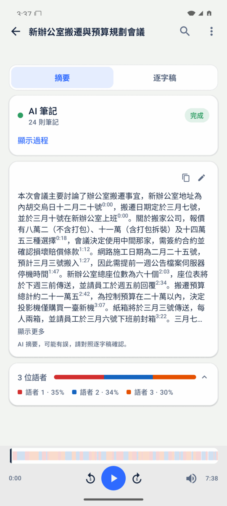
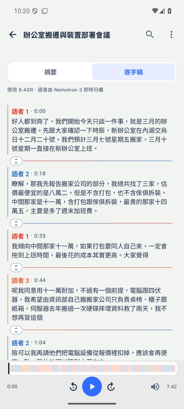

Prime Minutes
會議錄音 → 標註語者的逐字稿 → AI 筆記與摘要
全程在手機上完成，完全離線
全程在手機上完成，完全離線
iOS 與 Android App · 20–30 分鐘說明＋示範
一頁看懂
錄完，筆記就寫好了

Galaxy Note10+ 實機：連錄兩場會議，背景整理筆記
- 錄音中即時逐字稿，約兩秒上螢幕，同時標註誰在說話。
- 錄音中 AI 就在閱讀逐字稿：決議、待辦、提議、未決事項與數字。
- 停止後自動完成段落式摘要與標題。
- 8 GB 以上的手機錄音中同步閱讀；卡片預告第一次閱讀約幾分鐘後開始。
- 之後可搜尋、提問、匯出、寄給與會者。
特色總覽
錄音 · AI 筆記 · 摘要 · 逐字稿

錄音：邊錄邊出文字

AI 筆記：決議與待辦逐條列出

摘要：自動成段＋標題
逐字稿：標註語者、可點播
錄音現場
說話後約兩秒，文字上螢幕

錄音中：逐字稿即時增長，每行標註語者

AI 筆記卡片即時顯示閱讀進度
- 轉寫延遲可在設定調整：越短越快、越長越準（預設 1.92 秒）。
- 語者分離由 Nemotron-3 聲紋模型完成，錄音中即標註。
- 「下一場」按钮：連續錄多場，前一場的背景筆記接續整理。
會後成果
摘要、筆記，每個時間點可核對原話
段落式摘要＋自動標題

長會議：分段摘要，後段持續補齊
播放器與逐字稿雙向同步：點文字播原話，拖進度列跟著highlight
誰說了什麼
語者辨識、名錄與分界編輯

語者圖例與顏色，一眼分人

「辨識聲音」：之後的會議自動建議名字，由你確認

分界編輯器：拖動「換人位置」修正語者，可復原、重做
名字跨會議共用（人錄），從系統聯絡人加入電子郵件。
會議庫
用語意搜尋整個會議庫

會議內搜尋：命中段落直接跳原話時間點

首頁搜尋：詞彙＋語意雙路，「誰提到預算」也能找到
- 語意搜尋由 EmbeddingGemma 2 270M（約 160 MB）在手機上完成。
- 詞彙搜尋不需模型，安裝即可用。
- 依日期分組，支援篩選chip與「依人」過濾。
向會議提問
Ask：回答附出處，可點回原話

會議內提問：答案引用時間點與語者

跨會議提問：引用多個場次
- 三階段：搜尋會議 → 閱讀摘錄 → 作答，面板顯示每階段秒數（約 6–14 秒）。
- 出處列「會議 · 時間」，點出處直接從該時間播放原話。
- 回答跟隨提問的語言；可帶著前一輪連續追問。
- 摘錄標有語者，所以能回答「誰負責什麼、期限何時」。
不只錄音
匯入音訊檔 · Podcast · YouTube · PeerTube

首頁「＋」：檔案 / Podcast / 影音連結

Podcast 單集：貼上 RSS 集數連結，自動下載轉寫
- 音訊檔（mp3／wav／m4a…）直接匯入；YouTube、PeerTube 貼連結即可（PeerTube 自動選最小檔案）。
- 下載可暫停／續傳，中斷不視為失敗；省電模式自動配合。
- 匯入走同一條管線：逐字稿、筆記、摘要、搜尋、提問全部可用，成果與錄音場次完全相同。
成果帶走
匯出與「寄給與會者」

匯出：PDF · Markdown · 純文字 · SRT／VTT／LRC 字幕 · 場次 .m4a

寄給與會者：摘要＋紀要＋會議時間，用你自己的郵件 App
- 場次 .m4a 內含音訊＋逐字稿＋筆記＋摘要，可在另一台裝置還原。
- 字幕檔直接供剪輯軟體使用。
場次整理
合併與分割，可復原

合併多場：確認摘要與語者對照

復原列：一鍵還原合併
- 一次會議錄成多場 → 合併成一場完整紀錄。
- 長錄音 → 在時間點分割成多個場次。
- 逐字稿可改文字、改派語者，長按即改。
效能與品質
延遲、準確度與資源

轉寫延遲 × 準確度：四種 int8 變體（預設 1.92 秒最準）
- Note10+（Snapdragon 855）整夜实测：21–28 分鐘連續錄音，轉寫穩定，記憶體約 1.1 GB 峰值。
- Ask 提問回應 6–14 秒（E2B，含檢索）。
- App 中斷／被系統终止後：自動恢復繼續，不損壞場次。
- 純 CPU 推理：不搶 GPU／NPU，溫控正常。
- 錄音畫面上方即時顯示 CPU／記憶體／電池，數值過高轉紅。
調校空間
設定：延遲、模型與下載

轉寫延遲四段可選（速度／準確度取捨）

模型管理：E2B／E4B 切換、選用模型上下架、僅限 Wi‑Fi
可靠性
中斷不是事故

被中斷的錄音：開 App 即提示续錄
- 錄音中被系統终止 → 重開自動接回，已錄內容不丟。
- 背景模型下載可暫停／續傳，電量與網路自動配合。
- 整夜 4 小時連續壓力測試：場次全數可解析、無損壞。
- App 更新後資料保留（Releases 覆蓋安裝）。
平台
Android 與 iOS 同步推進
- Android：GitHub Releases 直接安裝 APK，App 內每日檢查新版。
- iOS：TestFlight 測試版（iPhone 17+ 建議；6 GB 記憶體裝置亦支援 E4B）。
- 雙平台行為對齊：搜尋、提問、播放同步、逐字稿編輯。
- 取得與更新：github.com/vieenrose/PrimeMinutes（Releases 與 TestFlight）

換模型後可整場重跑：筆記與摘要重新生成
Prime Minutes
你的會議，留在你的手機。
GitHub Releases 下載 APK
iOS TestFlight
github.com/vieenrose/PrimeMinutes
謝謝！示範與 Q&A 時間。